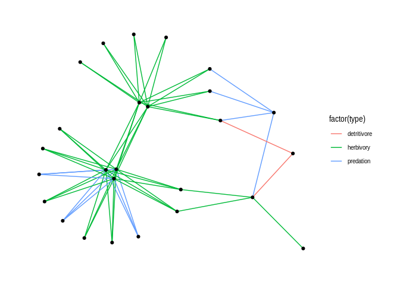

Oct 28, 2019
rOpenSci HQ
- What would you like to hear about in an rOpenSci Community Call? We are soliciting your “votes” and new ideas for Community Call topics and speakers. Find out how you can influence us by checking out our new Community Calls repository.
- Our next Community Call will be about testing. Tell us what you want to know about it or who you’d like to hear from by commenting in our new Community Calls repository.
- Stefanie Butland put out a call to action for you to share your uses cases, benefiting everyone in the process: What are Your Use Cases for rOpenSci Tools and Resources?
Software 📦
CRAN:  GitHub:
GitHub: 
New Versions
- A new version (
v2.0.4) ofijtiffis on CRAN - Comprehensive TIFF I/O with full support for ImageJ TIFF files. See the release notes for changes. Checkout the docs to get started.

link to docs in DESCRIPTION file; fix for
pkg-config - A new version (
v1.1.0) ofrebirdis on CRAN - client for the eBird database of bird observations. See the release notes for changes. Checkout the vignette to get started.
updated internal taxonomy; new fxn
ebirdhistoricalwith historical observations - A new version (
v0.9.2) ofrnoaais on CRAN - NOAA Weather Data from R. See the release notes for changes. Checkout the vignettes to get started.
gefs()gains new parametersens/timereplacingens_idx/time_idx;isd()now fetches data via http rather than ftp;tornadoes()fix - A new version (
v1.0.0) ofspoccis on CRAN - an interface to many species occurrence data sources. See the release notes for changes. Checkout the docs to get started.
source inat can now return photo metadata; docs improvements; bug fixes
- A new version (
v0.2.2) oftidyncis on CRAN - a tidy approach to NetCDF data exploration and extraction. See the release notes for changes. Checkout the docs to get started.
test fix
- A new version (
v1.1.0) ofsolriumis on CRAN - general purpose R interface to Solr. See the release notes for changes. Checkout the vignettes to get started.
docs fixes; group queries fixed (were failing due to a parsing error)
- A new version (
v0.9.9) oftaxizeis on CRAN - taxonomic toolbelt for R. See the release notes for changes. Checkout the taxize book to get started.
EUBON fxns using their new API;
synonyms()returned data more consistent now; fix XML parsing for COL; datasets in onLoad so available in fxn calls w/o pkg loaded;sci2comm/comm2sciwithdb="ncbi"no longer stop on no match found; many bug fixes - A new version (
v1.3.2) ofdatapackis on CRAN - flexible container to transport and manipulate data. See the release notes for changes. Checkout the docs to get started.
ensure that a ‘dc:creator’/’dcterms:modified’ elements are always present; gains fxn
removeRelationships(); remove dependency onredland::getNextResult - A new version (
v7.7.0) ofdrakeis on CRAN - a pipeline toolkit for reproducible computation at scale. See the release notes for changes. Checkout the docs to get started.
bug fix (use sum instead of max in
dir_size()); gains fxnswhich_clean(),drake_tempfile(), andcode_to_function() - A new version (
v1.0.3) ofessurveyis on CRAN - data from the European Social Survey. See the release notes for changes. Checkout the docs to get started.
breaking changes (see news); you can now download SDDF (weight data) for each country/round combination of files; new package website https://docs.ropensci.org/essurvey
- A new version (
v0.0.4) ofplotdapis on CRAN - easily visualize data from ERDDAP servers via the rerddap package. See the release notes for changes. Checkout the vignette to get started.
minor fixes
- A new version (
v1.1.0) ofstats19is on CRAN - Work with Open Road Traffic Casualty Data from Great Britain. See the release notes for changes. Checkout the docs to get started.
can now download 2018 data; bug fixes; new vignette
Software Review ✔
We accept community contributed packages via our software review system - an open software review system, sorta like scholarly paper review, but way better. We’ll highlight newly onboarded packages here. A huge thanks to our reviewers, who do a lot of work reviewing (see the blog post on our review system), and the authors of the packages!
If you want to be a reviewer fill out this short form, and we’ll ping you when there’s a submission that fits in your area of expertise.
The following package recently went through our software-review process and has been approved:
- mapscanner > Print Maps, Draw on Them, Scan Them Back In
- Author: Mark Padgham
- Issue: ropensci/onboarding#330
- Reviewers:
On the blog
It’s time for another installment of … 2 Months in 2 Minutes - rOpenSci News, October 2019 - if you want a brief summary of the last 2 months of these newsletters, these blog posts are for you (written by Stefanie Butland)
Kevin Cazelles and Steve Vissault wrote about their recently approved package [rmangal][], an R client for the Mangal ecological interactions database - rmangal: making ecological networks easily accessible

Use Cases
The following 13 works use/cite rOpenSci software:
- Friedman et al. used rfishbase in their paper A phylogenomic framework for pelagiarian fishes (Acanthomorpha: Percomorpha) highlights mosaic radiation in the open ocean 1
- Sánchez-Tójar et al. used rotl in their paper Illustrating the importance of meta-analysing variances alongside means in ecology and evolution 2
- Soh et al. used [biomartR][] in their paper Genome-wide association studies of 74 plasma metabolites of German shepherd dogs reveal two metabolites associated with genes encoding their enzymes 3
- Li et al. used rotl in their paper Agriculture erases climate constraints on soil nematode communities across large spatial scales 4
- Hwang et al. used pdftools in their paper Assessing Impact of Outreach through Software Citation for Community Software in Geodynamics 5
- Dick & He used rerddap in their paper Status of Cowcod (Sebastes levis 6
- Flower used CoordinateCleaner in their paper Food Plant Biogeography of the Sonoran Desert 7
- Enkhbayar et al. used rplos in their paper How much research shared on Facebook is hidden from public view? A comparison of public and private online activity around PLOS ONE papers 8
- Singh used bomrang in their paper Modelling Forest Lake Water Quality and Ecosystem Dynamics 9
- Etherington & Omondiagbe used NLMR and landscapetools in their paper virtualNicheR: generating virtual fundamental and realised niches for use in virtual ecology experiments 10
- Cazelles et al. used taxize and rfishbase in their paper Homogenization of freshwater lakes: recent compositional shifts in fish communities are explained by gamefish movement and not climate change 11
- Verstraeten et al. used MODIStsp in their paper Spatio-temporal monitoring and modelling of birch pollen levels in Belgium 12
- Bufford et al. used taxize in their paper Novel interactions between alien pathogens and native plants increase plant‐pathogen network connectance and decrease specialization 13
Call For Contributors
Part of the mission of rOpenSci is making sustainable software that users can rely on. Some software maintainers need to give up maintenance due to a variety of circumstances. When that happens we try to find new maintainers. Checkout our Contributing Guide for why and how to contribute to rOpenSci.
We’ve had six recent examples of maintainer transitions within rOpenSci:
- RSelenium: now maintained by Ju Kim
- chromer: now maintained by Paula Andrea
- qualtRics: now maintained by Julia Silge
- rsnps: now maintained by Julia Gustavsen and Sina Rüeger
- rdpla: now maintained by Alyssa Columbus
- webchem: now maintained by Erik Sapper
We’ve got one package in need of a new maintainer:
- mregions: The current maintainer Scott Chamberlain is looking for a new maintainer. Email Scott if you’re interested.
Keep up with rOpenSci
- Mailing list: Sign up with an email address to get this newsletter sent to your inbox -> ropensci.org/#subscribe
- Alternatively, you can subscribe to this newsletter via our XML feed at https://news.ropensci.org/feed.xml or our JSON feed at https://news.ropensci.org/feed.json
- rOpenSci on Twitter: @ropensci
- The rOpenSci blog at ropensci.org/blog - you can subscribe in any RSS aggregator, or manually via https://ropensci.org/feed.xml. We also announce new blog posts on our Twitter account.
Footnotes
-
Friedman, M., Feilich, K. L., Beckett, H. T., Alfaro, M. E., Faircloth, B. C., Černý, D., … Harrington, R. C. (2019). A phylogenomic framework for pelagiarian fishes (Acanthomorpha: Percomorpha) highlights mosaic radiation in the open ocean. Proceedings of the Royal Society B: Biological Sciences, 286(1910), 20191502. https://doi.org/10.1098/rspb.2019.1502 ↩
-
Sánchez-Tójar, A., Moran, N. P., O’Dea, R. E., Reinhold, K., & Nakagawa, S. (2019). Illustrating the importance of meta-analysing variances alongside means in ecology and evolution. https://doi.org/10.32942/osf.io/yhfvk ↩
-
Soh, P. X. Y., Marin Cely, J. M., Mortlock, S.-A., Jara, C. J., Booth, R., Natera, S., … Williamson, P. (2019). Genome-wide association studies of 74 plasma metabolites of German shepherd dogs reveal two metabolites associated with genes encoding their enzymes. Metabolomics, 15(9). https://doi.org/10.1007/s11306-019-1586-2 ↩
-
Li, X., Zhu, H., Geisen, S., Bellard, C., Hu, F., Li, H., … Liu, M. (2019). Agriculture erases climate constraints on soil nematode communities across large spatial scales. Global Change Biology. https://doi.org/10.1111/gcb.14821 ↩
-
Hwang, L. J., Pauloo, R. A., & Carlen, J. (2019). Assessing Impact of Outreach through Software Citation for Community Software in Geodynamics. Computing in Science & Engineering, 1–1. https://doi.org/10.1109/mcse.2019.2940221 ↩
-
Dick, E.J. and He, X. 2019. Status of Cowcod (Sebastes levis) in 2019. Pacific Fishery Management Council, Portland, OR. https://www.pcouncil.org/wp-content/uploads/2019/08/H5_Att9_Cowcod_2019_Full_E-Only_SEPT2019BB.pdf ↩
-
Flower, C. (2019). Food Plant Biogeography of the Sonoran Desert (Doctoral dissertation, Arizona State University). https://search.proquest.com/docview/2275500833 ↩
-
Enkhbayar, A., Haustein, S., Barata, G., & Alperin, J. P. (2019). How much research shared on Facebook is hidden from public view? A comparison of public and private online activity around PLOS ONE papers. arXiv preprint arXiv:1909.01476. https://arxiv.org/abs/1909.01476 ↩
-
Singh, J. 2019. Modelling Forest Lake Water Quality and Ecosystem Dynamics. Undergraduate Thesis. https://www.brisbane.qld.gov.au/sites/default/files/20190820%20Forest%20Lake%20Appendix%20A.pdf ↩
-
Etherington, T., & Omondiagbe, O. (2019). virtualNicheR: generating virtual fundamental and realised niches for use in virtual ecology experiments. Journal of Open Source Software, 4(41), 1661. https://doi.org/10.21105/joss.01661 ↩
-
Cazelles, K., Bartley, T., Guzzo, M. M., Brice, M., MacDougall, A. S., Bennett, J. R., … McCann, K. S. (2019). Homogenization of freshwater lakes: recent compositional shifts in fish communities are explained by gamefish movement and not climate change. Global Change Biology. https://doi.org/10.1111/gcb.14829 ↩
-
Verstraeten, W. W., Dujardin, S., Hoebeke, L., Bruffaerts, N., Kouznetsov, R., Dendoncker, N., … Delcloo, A. W. (2019). Spatio-temporal monitoring and modelling of birch pollen levels in Belgium. Aerobiologia. https://doi.org/10.1007/s10453-019-09607-w ↩
-
Bufford, J. L., Hulme, P. E., Sikes, B. A., Cooper, J. A., Johnston, P. R., & Duncan, R. P. (2019). Novel interactions between alien pathogens and native plants increase plant‐pathogen network connectance and decrease specialization. Journal of Ecology. https://doi.org/10.1111/1365-2745.13293 ↩